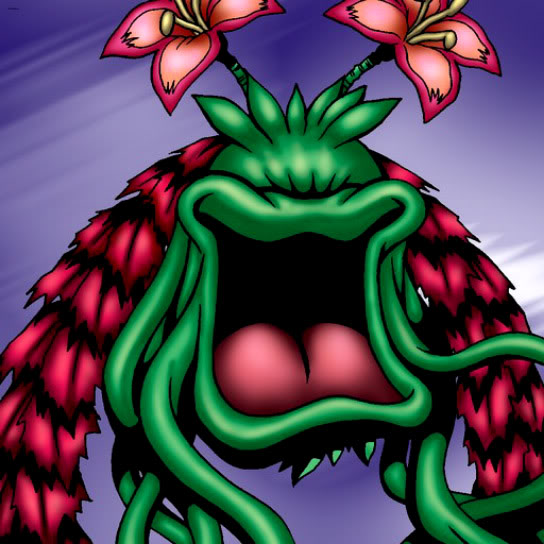

Laughing Flower

Description: "Control of opposing card is gained when this card is flipped face-up in battle."
STATS
ATK: 900
DEF: 500DECK COST
Deck Cost per Card: 19EFFECT NOT IMPLEMENTED
Fusion List (34 Possible Fusions)
- Laughing Flower + Fairywitch = Queen of Autumn Leaves
- Laughing Flower + Clown Zombie = Pumpking the King of Ghosts
- Laughing Flower + Corroding Shark = Pumpking the King of Ghosts
- Laughing Flower + Dancing Elf = Queen of Autumn Leaves
- Laughing Flower + Dragon Zombie = Pumpking the King of Ghosts
- Laughing Flower + Flame Ghost = Pumpking the King of Ghosts
- Laughing Flower + Goddess with the Third Eye = Queen of Autumn Leaves
- Laughing Flower + Great Bill = Flower Wolf
- Laughing Flower + Harpie Lady = Queen of Autumn Leaves
- Laughing Flower + Harpie's Pet Dragon = B. Dragon Jungle King
- Laughing Flower + Hero of the East = Bean Soldier
- Laughing Flower + Kagemusha of the Blue Flame = Bean Soldier
- Laughing Flower + Key Mace = Queen of Autumn Leaves
- Laughing Flower + Lady of Faith = Queen of Autumn Leaves
- Laughing Flower + Magical Ghost = Pumpking the King of Ghosts
- Laughing Flower + Magician of Faith = Queen of Autumn Leaves
- Laughing Flower + Mech Mole Zombie = Wood Remains
- Laughing Flower + Moon Envoy = Bean Soldier
- Laughing Flower + Mushroom Man #2 = Bean Soldier
- Laughing Flower + Mystical Elf = Queen of Autumn Leaves
- Laughing Flower + Queen's Double = Queen of Autumn Leaves
- Laughing Flower + Sangan = Rose Spectre of Dunn
- Laughing Flower + Shadow Specter = Wood Remains
- Laughing Flower + Skull Servant = Wood Remains
- Laughing Flower + Succubus Knight = Queen of Autumn Leaves
- Laughing Flower + The 13th Grave = Pumpking the King of Ghosts
- Laughing Flower + The Shadow Who Controls the Dark = Rose Spectre of Dunn
- Laughing Flower + The Snake Hair = Pumpking the King of Ghosts
- Laughing Flower + The Unhappy Maiden = Queen of Autumn Leaves
- Laughing Flower + Vishwar Randi = Queen of Autumn Leaves
- Laughing Flower + Wood Remains = Pumpking the King of Ghosts
- Laughing Flower + Yamadron = B. Dragon Jungle King
- Laughing Flower + Yamatano Dragon Scroll = B. Dragon Jungle King
- Laughing Flower + Zombie Warrior = Pumpking the King of Ghosts